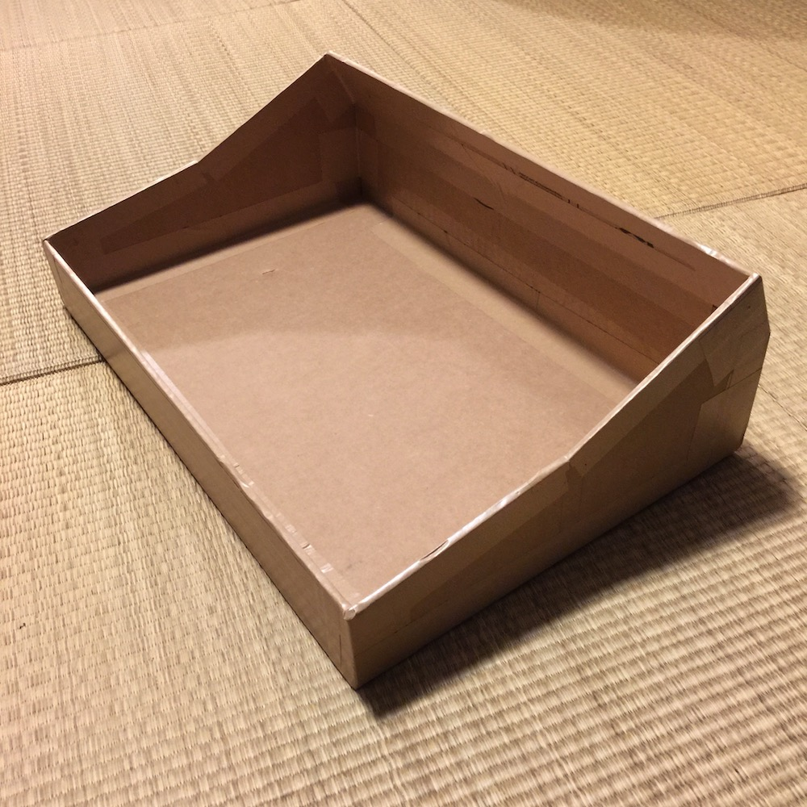
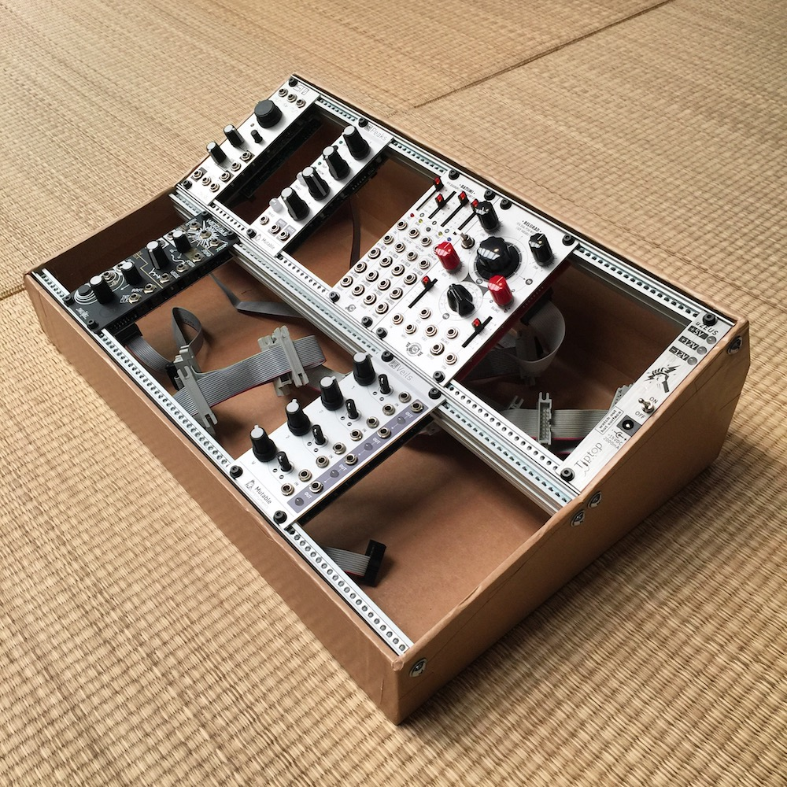
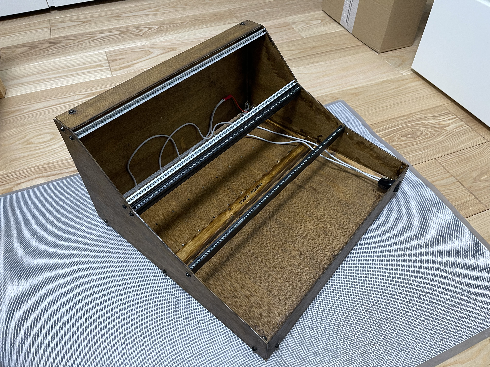
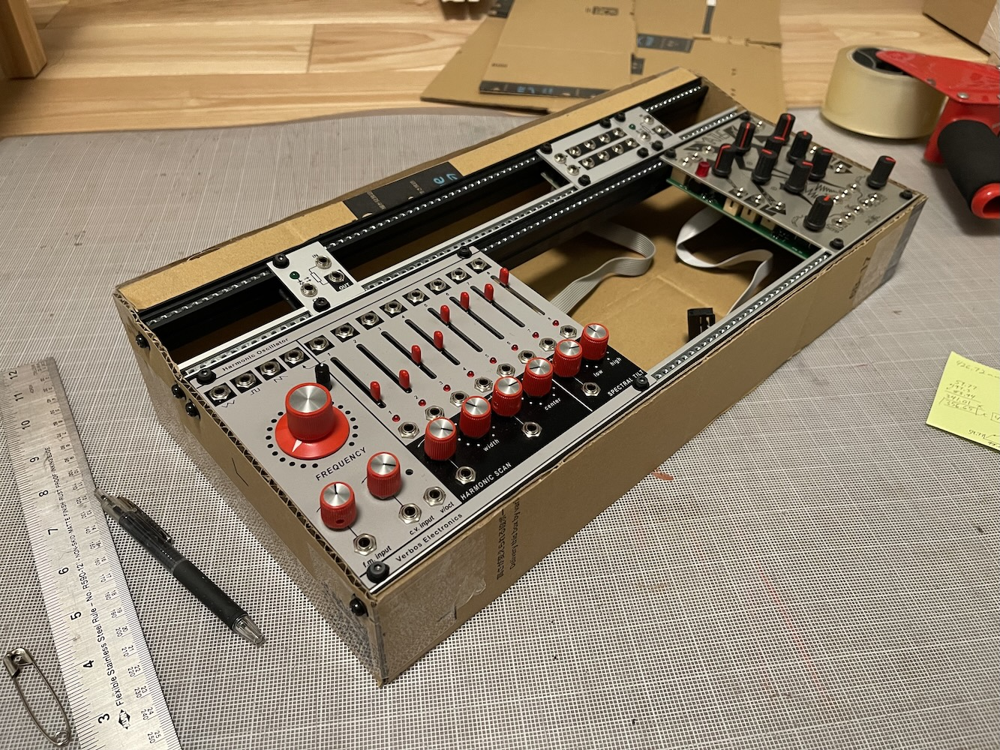

This is a somewhat simple one-page HTML app for messing around with planning how to build a DIY (cardboard) eurorack case. My original intent was just to create a tool that would allow me to visualize the angle for a 6U system case and gauge what amount of deskspace (and airspace) it would consume. It has since grown to support more rows (up to 5), 1U options (Intellijel and Pulp Logic), 3D case visualization, as well as an SVG/DXF export for laser cutting (outputs an SVG which you can pull into Adobe Illustrator or similar to arrange for laser cutting your material).
It is loosely based on the Future Music guide for how to build your own cardboard eurorack modular case and the accompanying PDF CardboardCaseGuide. Other references and specifications include:
- Doepfer A-100 Construction Details
- Intellijel 1U Technical Specifications
- Synthrotek Rails Technical Drawing
- Synthracks Eurorack Rails DIY Guide
- Exploding Shed Eurorack Dimensions
- Modwiggler Eurorack Rails DIY post
- Synthrotek Rails Template
- Tiptop Z-Rails Data Sheet
The most important concept in building this is to help line up the rails for build out. The most important thing about that is the spacing of the drill holes for the screws that go into the ends of the mounting rails. Second to that is the size that that rows take up. I combed through the specifications above to determine the spacing required for 3U and the 2 1U formats and started from there. The drill holes are then placed centered into the row size, whether that be the 133.35mm 3U size, or the 44.45mm Intellijel 1U row height. These heights accommodate the rails with the lips; the other non-lipped rails have drill hole positions offset from the channel onto which the modules mount and don't have the lips, so the hole spacing for mounting the rails and the row height changes somewhat. I have some Synthotek rails on order, so hopefully that will help figure that out a bit. For now, this goes with the Tiptop Z-Rails style rails, which have the lips, and for which the mounting channel is centered over the holes into which the screws go that attach the rails to the case sides.
Features
The first view that is shown is the side view. Originally this was constructed using HTML canvas but was recently updated to use SVG instead for better visual clarity and flexibility. The side view shows what the side profile of the case will be. There are also dotted outlines that represent the bottom panel/base for the case, the front panel, and the one or two back panels (depending on the configuration). Around the perimeter of the outline, the points are noted, starting with the origin point at the bottom left. These were added for the case where you might be cutting your own case parts manually and measuring with a ruler. In addition, the drill holes for the rails are marked for reference. Finally, there are some other reference lines and measurements that include the depth to the bottom of the case from a given row, the height of the row hole-to-hole spacing, and the absolute angle from zero for each row.
The second view, the 3D view, shows a basic rendering of the case so you can spin it around an look at it. It also gives a representation of what the case and parts will look like when constructed using the SVG/DXF export for laser cutting. I have done my best to make the box joints as reasonable as possible. Given that the idea is to laser cut the parts, when parts do not meet at 90 angles, the box joints will mesh together but will potentially not be perfectly flush. The side view outlines of the parts show how the parts will meet without the box joints.
NOTE: as noted, I have it marked as still in alpha as, though I have built a few prototypes from cardboard using the tool, I have not yet accessed a laser cutter to test prototypes that way. I currently (June 3, 2026) have 2 prototypes layed out and ready to go, but have not visited a local fab place yet to do the laser cutting – updates will ensue!
ADDITIONALLY, as noted: this prototype currently only supports Tiptop Z-Rails (and possibly the double sided ones at www.synthwerks.com). I am currently working on adding support for Synthrotek Rails, but have not yet implemented it. The combination of the offset of the mounting holes and the nut channel, as well as the absense of the lip make it so that they do not work with this case designer.
Export Features
The planner now supports exporting diagrams for use with laser cutters:
- SVG Export: Download the diagram as an SVG file with separate layers for cut lines, drill holes, and reference lines.
- DXF Export: Download the diagram as a DXF file compatible with most CAD software and laser cutting services.
Parameters
There are several adjustable parameters in the planner.
- Case material thickness - maybe a max of 5mm depending on your laser cutter, or maybe more if you are inventive...
- Case width in HP
- Module minimum depth to bottom and to the back of the case (when angled enough) - this allows you to make sure you can have a super flat case in the front, but then support your ES-9 in the back or middle. This depth marker lines also help out here.
- The rows. Here you can set the number of rows, the relative angle to one another, 3U or 1U (Intellijel or Pulp Logic)
- Flatten top shelf - in some configurations, the case is simpler to build with just a single back piece. At a certain point it makes more sense to have 2 piece at the top and back. The flatten top shelf allows you to set the angle of the topmost piece to a flat shelf, so it could be useful for putting things on, like small toys, tiny plants, or whatever.
Finished build
The three photos below are of the first case I built from cardboard using the planner version 1 as a guide (and also the full bottom width measurement from the FM guide). The angles used were 10 and 15 degrees (where the 15 degree is from the 10 degree line, so actually 25 degrees). This uses 2 pair of Tiptop Audio Z-Rails, 84hp, and a Tiptop uZeus for power.



This photo is of a case built using version 2 with 1U support.

Other me
To see some of the other stuff I’ve got going on, including where to find my music and places to connect, please check out intafon.com.